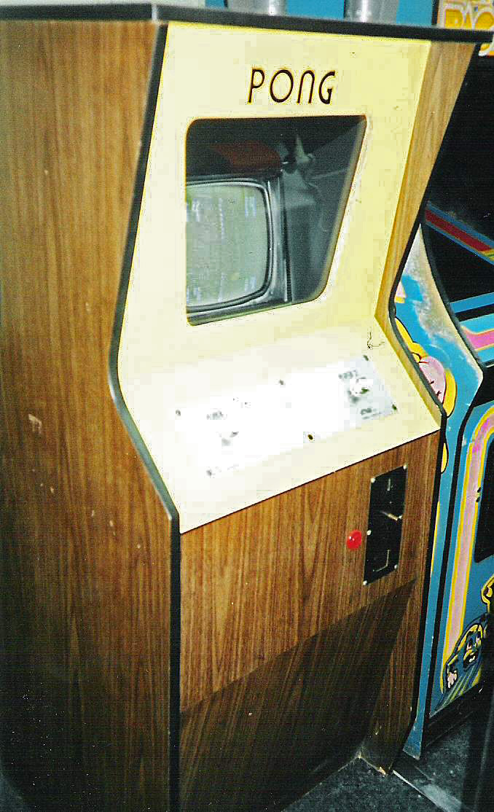
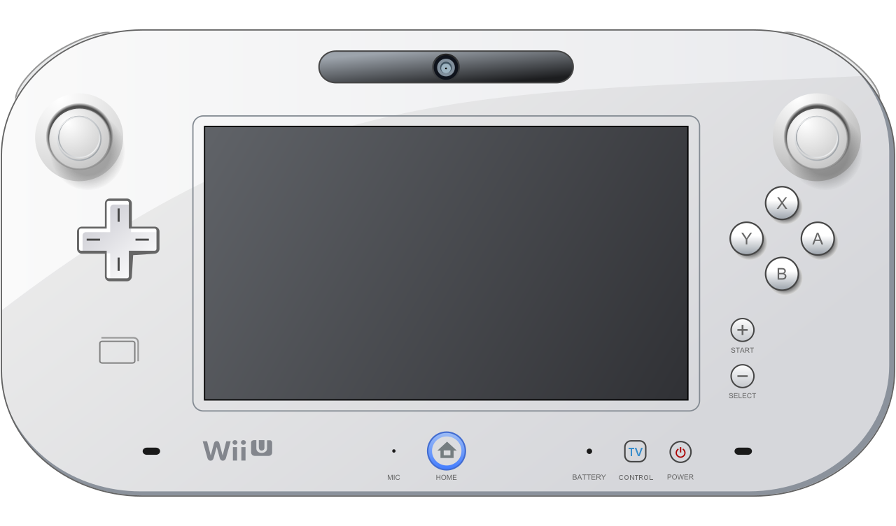

Década de 1970
La eclosión de los videojuegos. Un hito importante en el inicio de los videojuegos tuvo lugar en 1971 cuando Nolan Bushnell comenzó a comercializar Computer Space, una versión de Space War, aunque otra versión recreativa de Space War como fue Galaxy War puede que se le adelantara a principios de los 70 en el campus de la universidad de Standford. La ascensión de los videojuegos llegó con la máquina recreativa Pong que es considerada la versión comercial del juego Tennis for Two de Higginbotham. El sistema fue diseñado por Al Alcom para Nolan Bushnell en la recién fundada Atari (empresa en la que se inspira nuestra marca). El juego se presentó en 1972 y fue la piedra angular del videojuego como industria. Durante los años siguientes se implantaron numerosos avances técnicos en los videojuegos (destacando los microprocesadores y los chips de memoria). Aparecieron en los salones recreativos juegos como Space Invaders (Taito) o Asteroids (Atari).
Década de 1980
La década de los 8 bits. Los años 80 comenzaron con un fuerte crecimiento en el sector del videojuego alentado por la popularidad de los salones de máquinas recreativas y de las primeras videoconsolas aparecidas durante la década de los 70. Durante estos años destacan sistemas como Oddyssey 2 (Phillips), Intellivision (Mattel), Colecovision (Coleco), Atari 5200, Commodore 64, Turbografx (NEC). Por otro lado en las máquinas recreativas triunfaron juegos como el famoso Pacman (Namco), Battle Zone (Atari), Pole Position (Namco), Tron (Midway) o Zaxxon (Sega). El negocio asociado a esta nueva industria alcanzó grandes cosas en estos primeros años de los 80, pero sin embargo, en 1983 comenzó la llamada crisis del videojuego, afectando principalmente a Estados Unidos y Canadá, y que no llegaría a su fin hasta 1985. Japón apostó por el mundo de las consolas con el éxito de la Famicom (llamada en occidente como Nintendo Entertainment System), lanzada por Nintendo en 1983 mientras en Europa se decantaba por los microordenadores como el Commodore 64 o el Spectrum. A la salida de su particular crisis los norteamericanos continuaron la senda abierta por los japoneses y adoptaron la NES como principal sistema de videojuegos. A lo largo de la década fueron apareciendo nuevos sistemas domésticos como la Master System (Sega), el Amiga (Commodore) y el 7800 (Atari) con juegos hoy en día considerados clásicos como el Tetris. A finales de los 80 comenzaron a aparecer las consolas de 16 bits como la Mega Drive de Sega y los microordenadores fueron lentamente sustituidos por las computadoras personales basadas en arquitecturas de IBM. En 1985 apareció Super Mario Bros, que supuso un punto de inflexión en el desarrollo de los juegos electrónicos, ya que la mayoría de los juegos anteriores sólo contenían unas pocas pantallas que se repetían en un bucle y el objetivo simplemente era hacer una alta puntuación. El juego desarrollado por Nintendo supuso un estallido de creatividad. Por primera vez teníamos un objetivo y un final en un videojuego. En los años posteriores otras compañías emularon su estilo de juego.

Otra rama de los videojuegos que creció con fuerza fue la de los videojuegos portátiles. Estos comenzaron a principios de los 70 con los primeros juegos completamente electrónicos lanzados por Mattel, los cuales difícilmente podían considerarse como videojuegos, y fueron creciendo en popularidad gracias a conversiones de recreativas como las realizadas por Coleco o adictivos microjuegos como las Game & Watch de Nintendo. La evolución definitiva de las portátiles como plataformas de videojuego llegó en 1989 con el lanzamiento de la Game Boy (Nintendo).

Década de 1990

La revolución de las 3D. A principios de los años 90 las videoconsolas dieron un importante salto técnico gracias a la competición de la llamada "generación de 16 bits" compuesta por la Mega Drive, la Super Nintendo Entertainmet de Nintendo, la PC Engine de NEC, conocida como Turbografx en occidente y la CPS Changer de (Capcom). Junto a ellas también apareció la Neo Geo (SNK) una consola que igualaba las prestaciones técnicas de un arcade pero demasiado cara para llegar de forma masiva a los hogares. Esta generación supuso un importante aumento en la cantidad de jugadores y la introducción de tecnologías como el CD-ROM, una importante evolución dentro de los diferentes géneros de videojuegos, principalmente gracias a las nuevas capacidades técnicas. Mientras tanto diversas compañías habían comenzado a trabajar en videojuegos con entornos tridimensionales, principalmente en el campo de los PC, obteniendo diferentes resultados desde las “2D y media” de Doom, 3D completas de 4D Boxing a las 3D sobre entornos pre-renderizados de Alone in Dark. Referente a las ya antiguas consolas de 16 bits, su mayor y último logro se produciría por el SNES mediante la tecnología 3-D de pre-renderizados de SGI, siendo su máxima expresión juegos como Donkey Kong Country y Killer Instinct. También surgió el primero juego poligonal en consola, la competencia de la SNES, Mega-Drive, lanzó el Virtual Racing, que tuvo un gran éxito ya que marcó un antes y un después en los juegos 3D en consola. Rápidamente los videojuegos en 3D fueron ocupando un importante lugar en el mercado, principalmente gracias a la llamada "generación de 32 bits" en las videoconsolas: Sony PlayStation y Sega Saturn (principalmente en Japón); y la “generación de 64 bits” en las videoconsolas: Nintendo 64 y Atari jaguar. En cuanto a los ordenadores, se crearon las aceleradoras 3D. La consola de Sony apareció tras un proyecto iniciado con Nintendo (denominado SNES PlayStation), que consistía en un periférico para SNES con lector de CD. Al final Nintendo rechazó la propuesta de Sony, puesto que Sega había desarrollado algo parecido sin tener éxito, y Sony lanzó independientemente PlayStation. Hacia finales de la década la consola más popular era la PlayStation con juegos como Final Fantasy VII (Square), Resident Evil (Capcom), Winning Eleven 4 (Konami), Gran Turismo (Polyphony Digital) y Metal Gear Solid (konami).
Década de los 2000

En el 2000 Sony lanzó la anticipada PlayStation 2 y Sega lanzó otra consola con las mismas características técnicas de la Dreamcast, nada más que venia con un monitor de 14 pulgadas, un teclado, altavoces y los mismos mandos llamados Dreamcast Drivers 2000 Series CX-1. Microsoft entra en la industria de las consolas creando la Xbox en 2001. Nintendo lanzó el sucesor de la Nintendo 64, la Gamecube, y la primera Game Boy completamente nueva desde la creación de la compañía, la Game Boy Advance. Sega viendo que no podría competir, especialmente con una nueva máquina como la de Sony, anunció que ya no produciría hardware, convirtiéndose sólo en desarrolladora de software en 2002. El ordenador personal PC es la plataforma más cara de juegos pero también la que permite mayor flexibilidad. Esta flexibilidad proviene del hecho de poder añadir al ordenador componentes que se pueden mejorar constantemente, como son tarjetas gráficas o de sonido y accesorios como volantes, pedales y mandos, etc. Además es posible actualizar los juegos con parches oficiales o con nuevos añadidos realizados por la compañía que creó el juego o por otros usuarios.


Mientras tanto, el mercado de los PC seguía dominado por esquemas de juego que ya habían hecho su aparición con anterioridad. Triunfaban los videojuegos de estrategia en tiempo real (Warcraft, Age of Empires) y los juegos de acción en línea (Call of Duty, Battlefield 1942) En 2004 salió al mercado la Nintendo DS, primer producto de la nueva estrategia de una compañía que había renunciado al mercado de las videoconsolas clásicas, y poco después apareció la PlayStation Portable, una consola similar que no llegó a alcanzar a la primera en cifras de ventas. En 2005 Microsoft lanzó su Xbox 360, un modelo mejorado de su primera consola diseñado para competir con la PlayStation 2. La respuesta de Sony no se hizo esperar, y pocos meses después lanzó su PlayStation 3, una consola que inicialmente no consiguió el éxito esperado. La revolución de Nintendo tuvo lugar en abril de 2006 cuando presentó su Wii, una máquina con un innovador sistema de control por movimiento. Con esta consola, Nintendo volvió a recuperar el terreno perdido ante sus competidores.
Década de 2010
Tras el arrollador éxito de Nintendo con Wii, sus competidoras directas, Sony y Microsoft, iniciaron una carrera por brindar a sus consolas nuevos e innovadores sistemas de control. En septiembre de 2010, PS3 recibió por fin su tan esperado sistema de control por movimiento, con PlayStation Move. Aunque no consiguió el éxito esperado.
Microsoft, la tercera en discordia, no se quedó de brazos cruzados durante esta etapa y siguió trabajando muy duro para mantener el increíble nivel al que nos tenía acostumbrados. Dotado de tecnología de última generación, el dispositivo Kinect era capaz de reconocer nuestros movimientos y trasladarlos con gran precisión a la pantalla, lo que dio a pie a un catálogo de lanzamiento repleto de propuestas tan variadas como originales.
3DS la nueva apuesta de nintendo. En una época en la que el contenido 3D estaba más de moda que nunca, y en la que nos pasábamos las horas discutiendo si eran mejores los lentes activos o pasivos, la compañía nipona lanzó al mercado 3DS.

Octava Generación
Lo destacable de esta generación es el uso de internet como eje central de la funcionalidad de las consolas, esto convertidos en centros de comunicación juntando en un único aparato las funciones de sistema de juegos y bazar de venta de películas, series de TV y otros contenidos desde la propia consola. Aunque las generaciones anteriores de videoconsolas normalmente se han sucedido en ciclos de cinco años, la transición de la séptima a la octava generación ha durado más de seis años. La transición es igual de inusual en que la consola de la anterior generación que tuvo más ventas, la Wii, es la primera en tener sucesora, pero también la primera en ser descontinuada. Tanto Microsoft como Sony han tardado más años para buscar su próxima versión de consolas, pues consideran que su actual séptima generación solo cumplió una parte de un ciclo de vida de diez años.


Actualidad

Nintendo Switch es una consola de videojuegos desarrollada por Nintendo y fue lanzada mundialmente el 3 de marzo de 2017. Nintendo considera a Switch una consola híbrida. Se puede utilizar como consola de sobremesa con la unidad principal insertada en una estación de acoplamiento para conectarla con un televisor. Alternativamente, puede ser extraída de la base y utilizada de forma similar a una tableta a través de su pantalla táctil, o colocada sobre una superficie gracias a su soporte plástico integrado siendo así visible por varios jugadores.

Estas consolas representan mejoras significativas en el rendimiento de las consolas anteriores PlayStation 4 y Xbox One, agregando procesadores gráficos y de cómputo más rápidos, soporte para gráficos de trazado de rayos en tiempo real, salida para resolución 4K y, en algunos casos, resolución 8K, con velocidades de renderizado de 60 fotogramas por segundo (fps) o más.Internamente, ambas familias de consolas introdujeron nuevos sistemas internos de unidad de estado sólido (SSD) para ser utilizados como sistemas de memoria y almacenamiento de alto rendimiento para juegos para reducir o eliminar los tiempos de carga y admitir transmisión en vivo en el juego. La PlayStation 5 Digital Edition y la Xbox Series S carecen de una unidad óptica de discos, pero conservan la compatibilidad con la distribución en línea y el almacenamiento de juegos en dispositivos USB externos.